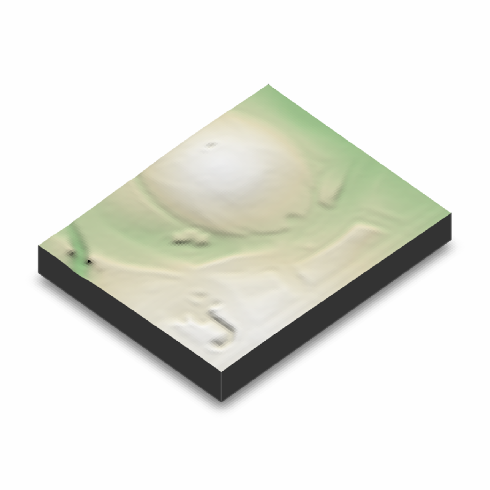
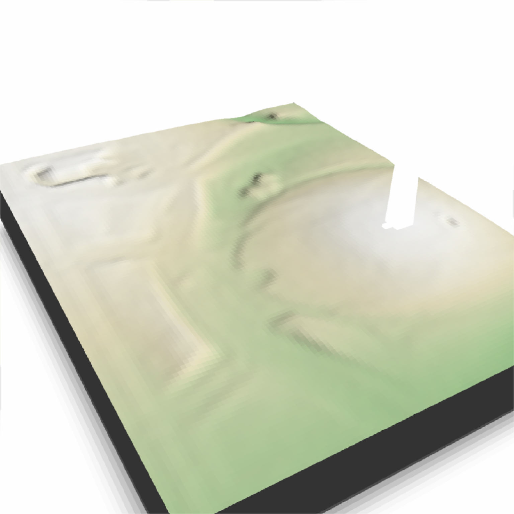
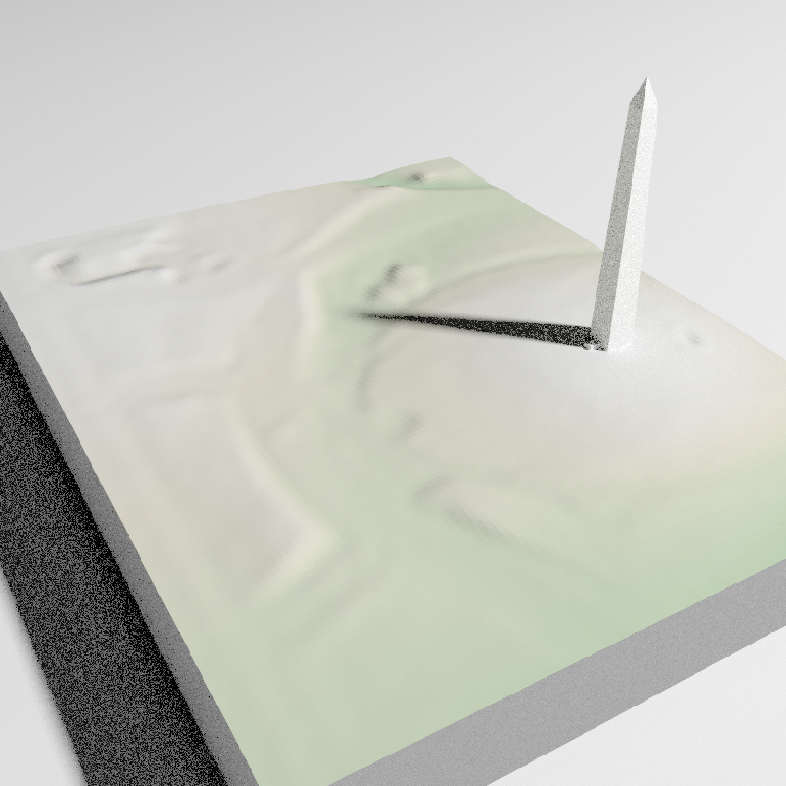

Adds MULTIPOLYGONZ will be plotted in the coordinate system set by the user-specified `extent` argument as-is.
You can also use `save_multipolygonz_to_obj()` manually to convert sf objects
render_multipolygonz(
sfobj,
extent = NULL,
zscale = 1,
heightmap = NULL,
color = "grey50",
offset = 0,
obj_zscale = TRUE,
swap_yz = TRUE,
clear_previous = FALSE,
baseshape = "rectangle",
rgl_tag = "_multipolygon",
...
)An sf object with MULTIPOLYGON Z geometry.
Either an object representing the spatial extent of the scene (either from the `raster`, `terra`, `sf`, or `sp` packages), a length-4 numeric vector specifying `c("xmin", "xmax","ymin","ymax")`, or the spatial object (from the previously aforementioned packages) which will be automatically converted to an extent object.
Default `1`. The ratio between the x and y spacing (which are assumed to be equal) and the z axis in the original heightmap.
Default `NULL`. Automatically extracted from the rgl window--only use if auto-extraction of matrix extent isn't working. A two-dimensional matrix, where each entry in the matrix is the elevation at that point. All points are assumed to be evenly spaced.
Default `black`. Color of the 3D model, if `load_material = FALSE`.
Default `5`. Offset of the track from the surface, if `altitude = NULL`.
Default `TRUE`. Whether to scale the size of the OBJ by zscale to have it match the size of the map. If zscale is very big, this will make the model very small.
Default `TRUE`. Whether to swap and Y and Z axes. (Y axis is vertical in rayshader coordinates, but data is often provided with Z being vertical).
Default `FALSE`. If `TRUE`, it will clear all existing points.
Default `rectangle`. Shape of the base. Options are `c("rectangle","circle","hex")`.
Default `""`. Tag to add to the rgl scene id, will be prefixed by `"obj"`
Additional arguments to pass to `rgl::triangles3d()`.
run_examples = length(find.package("sf", quiet = TRUE)) &&
length(find.package("elevatr", quiet = TRUE)) &&
length(find.package("raster", quiet = TRUE)) &&
run_documentation()
if(run_examples) {
library(sf)
#Set location of washington monument
washington_monument_location = st_point(c(-77.035249, 38.889462))
wm_point = washington_monument_location |>
st_point() |>
st_sfc(crs = 4326) |>
st_transform(st_crs(washington_monument_multipolygonz))
elevation_data = elevatr::get_elev_raster(locations = wm_point, z = 14)
scene_bbox = st_bbox(st_buffer(wm_point,300))
cropped_data = raster::crop(elevation_data, scene_bbox)
#Use rayshader to convert that raster data to a matrix
dc_elevation_matrix = raster_to_matrix(cropped_data)
#Remove negative elevation data
dc_elevation_matrix[dc_elevation_matrix < 0] = 0
#Plot a 3D map of the national mall
dc_elevation_matrix |>
height_shade() |>
add_shadow(lamb_shade(dc_elevation_matrix), 0) |>
plot_3d(dc_elevation_matrix, zscale=3.7, water = TRUE, waterdepth = 1,
soliddepth=-50, windowsize = 800)
render_snapshot()
}
#> Linking to GEOS 3.11.0, GDAL 3.5.3, PROJ 9.1.0; sf_use_s2() is FALSE
#> Please note that rgdal will be retired during October 2023,
#> plan transition to sf/stars/terra functions using GDAL and PROJ
#> at your earliest convenience.
#> See https://r-spatial.org/r/2023/05/15/evolution4.html and https://github.com/r-spatial/evolution
#> rgdal: version: 1.6-7, (SVN revision 1203)
#> Geospatial Data Abstraction Library extensions to R successfully loaded
#> Loaded GDAL runtime: GDAL 3.5.3, released 2022/10/21
#> Path to GDAL shared files: /Users/runner/work/_temp/Library/rgdal/gdal
#> GDAL does not use iconv for recoding strings.
#> GDAL binary built with GEOS: TRUE
#> Loaded PROJ runtime: Rel. 9.1.0, September 1st, 2022, [PJ_VERSION: 910]
#> Path to PROJ shared files: /Users/runner/work/_temp/Library/rgdal/proj
#> PROJ CDN enabled: FALSE
#> Linking to sp version:1.6-1
#> To mute warnings of possible GDAL/OSR exportToProj4() degradation,
#> use options("rgdal_show_exportToProj4_warnings"="none") before loading sp or rgdal.
#> Warning: PROJ support is provided by the sf and terra packages among others
#> Warning: PROJ support is provided by the sf and terra packages among others
#> Mosaicing & Projecting
#> Note: Elevation units are in meters.

if(run_examples) {
#Zoom in on the monument
render_camera(theta=150, phi=35, zoom= 0.55, fov=70)
#Render the national monument
rgl::par3d(ignoreExtent = TRUE)
render_multipolygonz(washington_monument_multipolygonz,
extent = raster::extent(cropped_data),
zscale = 4, color = "white",
heightmap = dc_elevation_matrix)
render_snapshot()
}

if(run_examples) {
#This works with `render_highquality()`
render_highquality(sample_method="sobol_blue", clamp_value=10, min_variance = 0)
}
